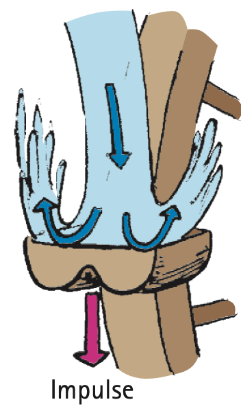
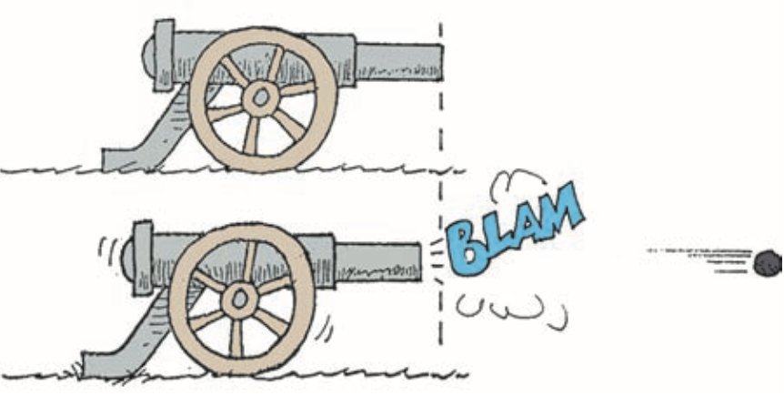
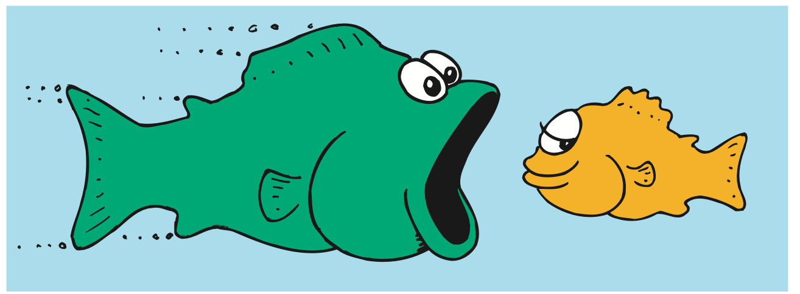

Bouncing
Bouncing
If a flowerpot falls from a shelf onto your head, you may be in trouble. If it bounces off your head, you may be in more serious trouble. Why? Because impulses are greater when an object bounces. The impulse required to bring an object to a stop and then to “throw it back again” is greater than the impulse required merely to bring the object to a stop. Suppose, for example, that you catch the falling pot with your hands. You provide an impulse to reduce its momentum to zero. If you throw the pot upward again, you have to provide additional impulse. This increased amount of impulse is the same as the impulse your head supplies if the flowerpot bounces from it.
One of the photos at the beginning of this chapter shows physics instructor Howie Brand swinging a dart against a wooden block. When the dart has a nail at its nose, the dart comes to a halt as it sticks to the block. The block remains upright. When the nail is removed and the nose of the dart is half of a solid rubber ball, the dart bounces upon contact with the block. The block topples over. The force against the block is greater when bouncing occurs.
The fact that impulses are greater when bouncing occurs was used with great success during the California Gold Rush. Inefficient paddle wheels were used in mining operations at the time. The concept of bouncing was employed by Lester A. Pelton, who designed a curved paddle that caused the incoming water to bounce upon impact. The bouncing of the water greatly increased the impulse on the wheel.

Figure 6.9 is referenced in the Check Point but was omitted because no matching captured image was supplied.
Conservation of Momentum
Conservation of Momentum
From Newton’s second law, you know that to accelerate an object, a net force must be applied to it. This chapter states much the same thing, but in different language. If you wish to change the momentum of an object, exert an impulse on it.
Only an impulse external to a system can change the momentum of the system. Internal forces and impulses won’t work. For example, the molecular forces within a baseball have no effect on the momentum of the baseball, just as a push against the dashboard of a car you’re sitting in does not affect the momentum of the car. Molecular forces within the baseball and a push on the dashboard are internal forces. They come in balanced pairs that cancel to zero within the object. To change the momentum of the ball or the car, an external push or pull is required. If no external force is present, then no external impulse is present, and no change in momentum is possible.
As another example, consider the cannon being fired in Figure 6.11. The force on the cannonball inside the cannon barrel is equal and opposite to the force that causes the cannon to recoil. Since these forces act for the same duration of time, the impulses are also equal and opposite. Recall Newton’s third law about equal and opposite action and reaction forces. It applies to impulses, too. These impulses are internal to the system comprising the cannon and the cannonball, so they don’t change the momentum of the cannon–cannonball system. Before the firing, the system is at rest and the momentum is zero. After the firing, the net momentum, or total momentum, is still zero. Net momentum is neither gained nor lost.

Momentum, like the quantities velocity and force, has both direction and magnitude. It is a vector quantity. Like velocity and force, momentum can be canceled. So, although the cannonball in the preceding example gains momentum when fired and the recoiling cannon gains momentum in the opposite direction, there is no gain in the cannon–cannonball system. The momenta (plural form of momentum) of the cannonball and the cannon are equal in magnitude and opposite in direction.2 Therefore, as vectors, they add to zero for the system as a whole. Since no net external force acts on the system, there is no net impulse on the system and no net change in momentum. You can see that, if no net force or net impulse acts on a system, the momentum of that system cannot change.

When momentum, or any quantity in physics, does not change, we say it is conserved. The idea that momentum is conserved when no external force acts is elevated to a central law of mechanics, called the law of conservation of momentum, which states:
In the absence of an external force, the momentum of a system remains unchanged.
In any system in which all forces are internal—as, for example, cars colliding, atomic nuclei undergoing radioactive decay, or stars exploding—the net momentum of the system before and after the event is the same.
Footnotes
Collisions
Collisions
Momentum is conserved in collisions; that is, the net momentum of a system of colliding objects is unchanged before, during, and after the collision. This is because the forces that act during the collision are internal forces—forces acting and reacting within the system itself. There is only a redistribution or sharing of whatever momentum exists before the collision. In any collision, we can say:
Net momentum before collision = net momentum after collision.
This is true no matter how the objects might be moving before they collide.
When a moving billiard ball collides head-on with another billiard ball at rest, the moving ball comes to rest and the other ball moves away with the speed of the colliding ball. We call this an elastic collision; ideally, the colliding objects rebound without lasting deformation or the generation of heat (Figure 6.13). But momentum is conserved even when the colliding objects become entangled during the collision. This is an inelastic collision, characterized by deformation, or the generation of heat, or both. In a perfectly inelastic collision, the two objects stick together. Consider, for example, the case of a freight car moving along a track and colliding with another freight car at rest (Figure 6.14). If the freight cars are of equal mass and are coupled by the collision, can we predict the velocity of the coupled cars after impact?

Suppose the single car is moving at 10 meters per second (m/s) and the mass of each car is m. Then, from the conservation of momentum,
(net mv)before = (net mv)after
(m × 10)before = (2m × V)after
By simple algebra, V = 5 m/s. This makes sense because, since twice as much mass is moving after the collision, the velocity must be half as great as the velocity before the collision. Both sides of the equation are then equal.

Note the inelastic collisions shown in Figure 6.15. If A and B are moving with equal momenta in opposite directions (A and B colliding head-on), then one of these is considered to be negative, and the momenta add algebraically to zero. After the collision, the coupled wreck remains at the point of impact, with zero momentum. If, on the other hand, A and B are moving in the same direction (A catching up with B), the net momentum is simply the addition of their individual momenta.

If A, however, moves east with, say, 10 more units of momentum than B moving west (not shown in the figure), then after the collision, the coupled wreck moves east with 10 units of momentum. The wreck will finally come to a rest, of course, because of the external force of friction by the ground. The time of impact is short, however, and the impact force of the collision is so much greater than the external friction force that momentum immediately before and after the collision is, for practical purposes, conserved. The net momentum just before the trucks collide (10 units) is equal to the combined momentum of the crumpled trucks just after impact (10 units). The same principle applies to gently docking spacecraft, where friction is entirely absent. Their net momentum just before docking is preserved as their net momentum just after docking.
Figure 6.16 was omitted because no matching captured image was supplied. Caption: Will Maynez demonstrates his air track. Blasts of air from tiny holes provide a friction-free surface for the carts to glide upon.
For a numerical example of momentum conservation, consider a fish that swims toward and swallows a smaller fish at rest (Figure 6.17). If the larger fish has a mass of 5 kg and swims 1 m/s toward a 1-kg fish, what is the velocity of the larger fish immediately after lunch? Ignore the effects of water resistance.

We can answer this question using conservation of momentum:
Net momentum before lunch = net momentum after lunch
(5 kg)(1 m/s) + (1 kg)(0 m/s) = (5 kg + 1 kg)v
5 kg • m/s = (6 kg)v
v = 5/6 m/s
We see that the small fish has no momentum before lunch because its velocity is zero. After lunch, the combined mass of both fishes moves at velocity v, which, by simple algebra, is seen to be 5/6 m/s. This velocity is in the same direction as that of the larger fish.
Suppose the small fish in this example is not at rest, but swims toward the left at a velocity of 4 m/s. It swims in a direction opposite that of the larger fish—a negative direction, if the direction of the larger fish is considered positive. In this case,
Net momentum before lunch = net momentum after lunch
(5 kg)(1 m/s) + (1 kg)(-4 m/s) = (5 kg + 1 kg)v
(5 kg • m/s) - (4 kg • m/s) = (6 kg)v
1 kg • m/s = 6 kg v
v = 1/6 m/s
Note that the negative momentum of the smaller fish before lunch effectively slows the larger fish after lunch. If the smaller fish were swimming twice as fast, then
Net momentum before lunch = net momentum after lunch
(5 kg)(1 m/s) + (1 kg)(-8 m/s) = (5 kg + 1 kg)v
(5 kg • m/s) - (8 kg • m/s) = (6 kg)v
-3 kg • m/s = 6 kg v
v = -1/2 m/s
We see the final velocity is -1/2 m/s. What is the significance of the minus sign? It means that the final velocity is opposite to the initial velocity of the larger fish. After lunch, the two-fish system moves toward the left. We leave as a chapter-end problem finding the initial velocity of the smaller fish that halts the larger fish in its tracks.
More Complicated Collisions
More Complicated Collisions
The net momentum remains unchanged in any collision, regardless of the angle between the paths of the colliding objects. The net momentum when different directions are involved can be expressed with the parallelogram rule of vector addition. We will not treat such complicated cases in great detail here, but we’ll show some simple examples to convey the concept.
In Figure 6.18, we see a collision between two cars traveling at right angles to each other. Car A has a momentum directed due east, and car B’s momentum is directed due north. If their individual momenta are equal in magnitude, then their combined momentum is in a northeasterly direction. This is the direction the coupled cars will travel after collision. We see that, just as the diagonal of a square is not equal to the sum of two of the sides, the magnitude of the resulting momentum does not simply equal the arithmetic sum of the two momenta before the collision. Recall the relationship between the diagonal of a square and the length of one of its sides (see Figure 2.9 in Chapter 2)—the diagonal is √2 times the length of the side of a square. So, in this example, the magnitude of the resultant momentum will be equal to √2 times the momentum of either vehicle.


Figure 6.20 shows a falling firecracker exploding into two pieces. The momenta of the fragments combine by vector addition to equal the original momentum of the falling firecracker. Figure 6.19b extends this idea to the microscopic realm, where the tracks of subatomic particles are revealed in a liquid hydrogen bubble chamber.

Whatever the nature of a collision or however complicated it is, the total momentum before, during, and after remains unchanged. This extremely useful law enables us to learn much from collisions without any knowledge of the forces that act in the collisions. We will see, in the next chapter, that energy, perhaps in multiple forms, is also conserved. By applying momentum and energy conservation to the collisions of subatomic particles as observed in various detection chambers, we can compute the masses of these tiny particles. We obtain this information by determining momenta and energy before and after collisions.
Conservation of momentum and conservation of energy (which we will cover in the next chapter) are the two most powerful tools of mechanics. Applying them yields detailed information that ranges from facts about the interactions of subatomic particles to the structure and motion of entire galaxies.
Textbook Sections: 6.4–6.7
Learning Target: Students will use conservation of momentum to analyze collisions, explosions, recoil, and interacting systems.
- I can explain what it means for momentum to be conserved.
- I can identify the system being analyzed in a momentum situation.
- I can distinguish internal forces from external forces.
- I can explain why momentum is conserved in both elastic and inelastic collisions when no net external impulse acts.
- I can compare before-and-after momentum in simple collision and recoil situations.